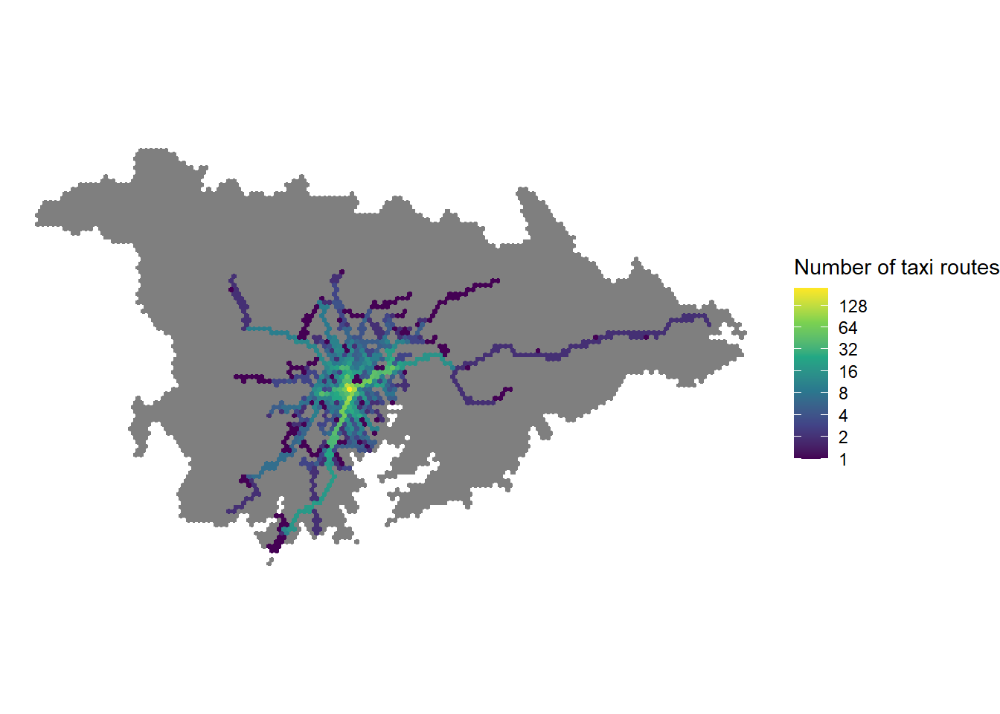
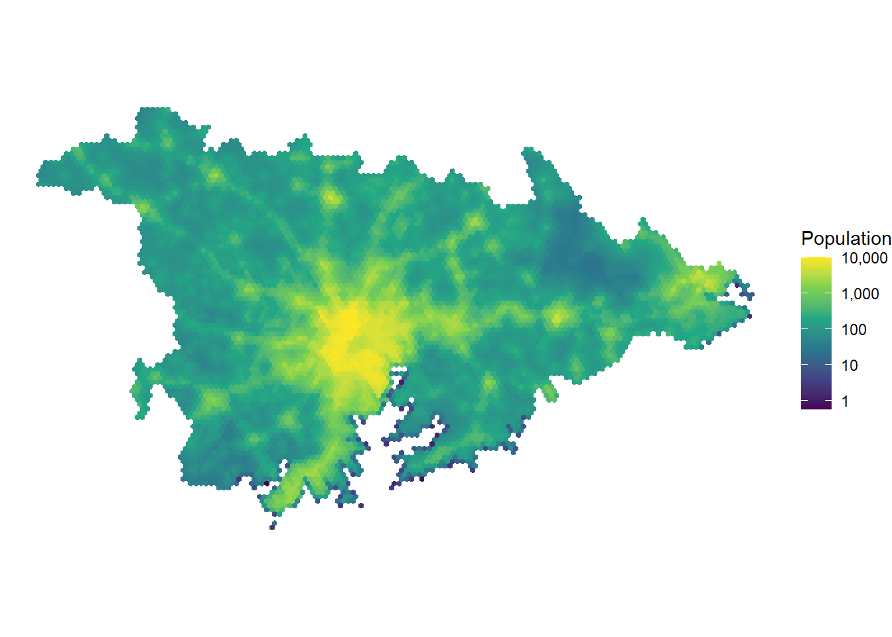
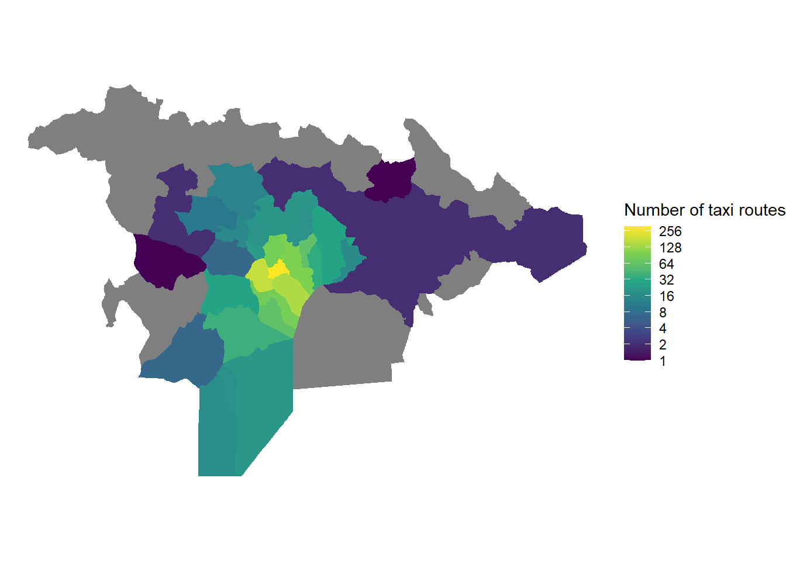
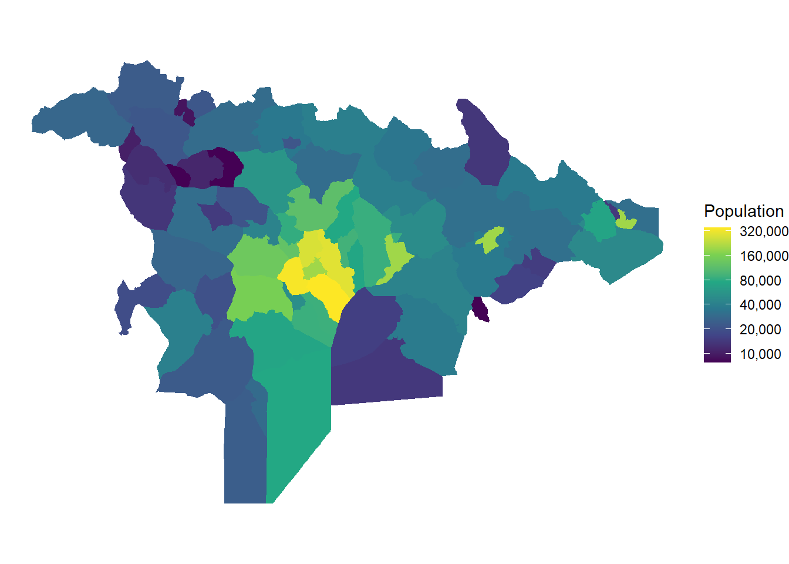
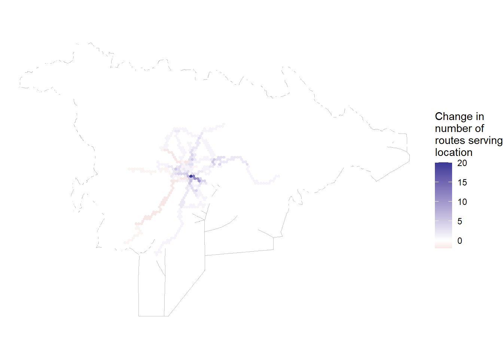
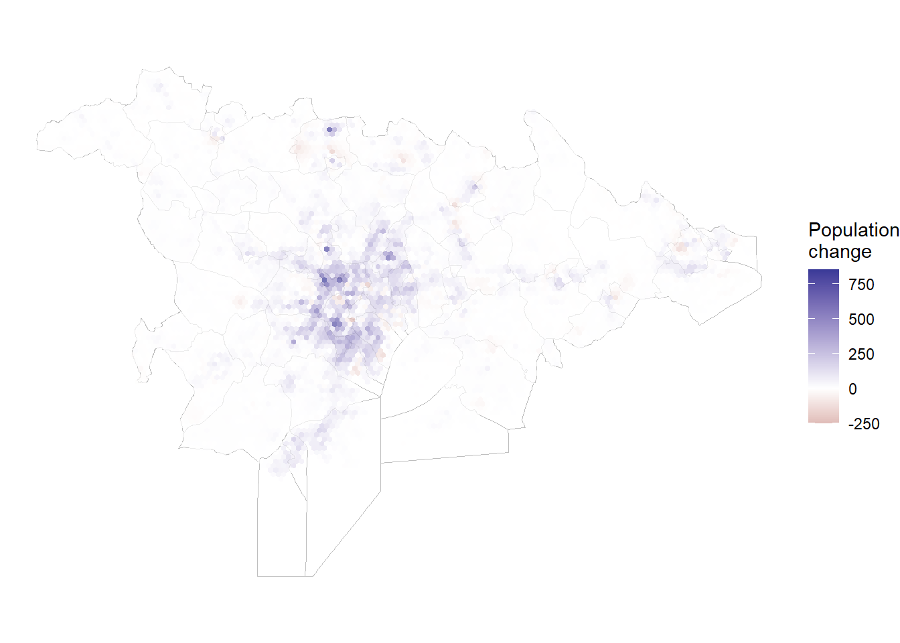
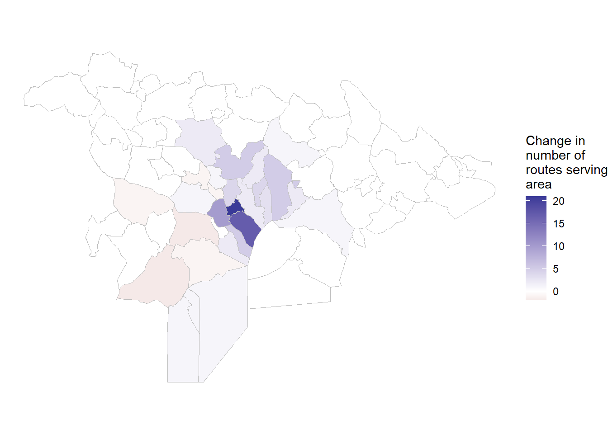
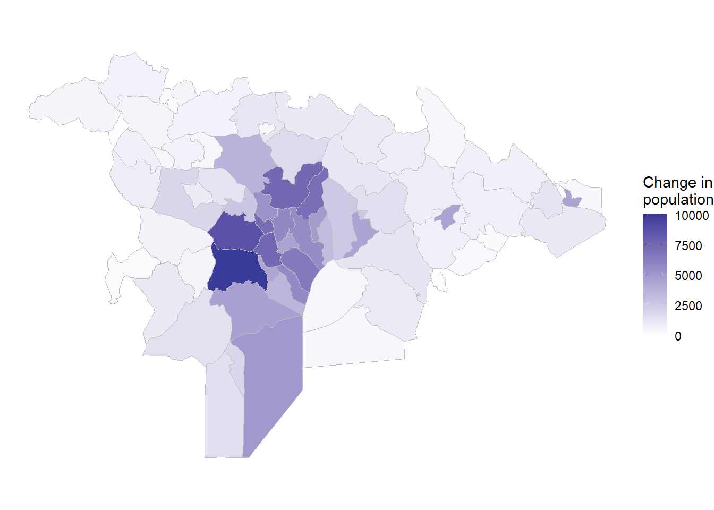
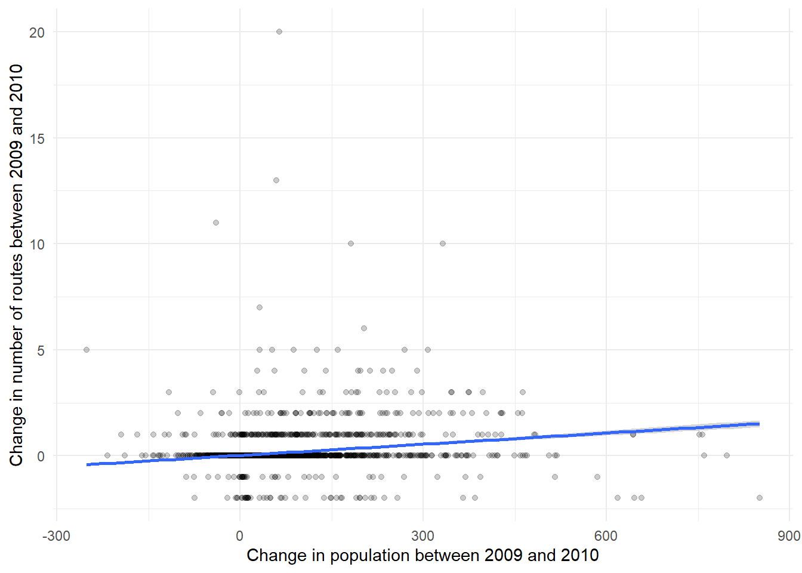
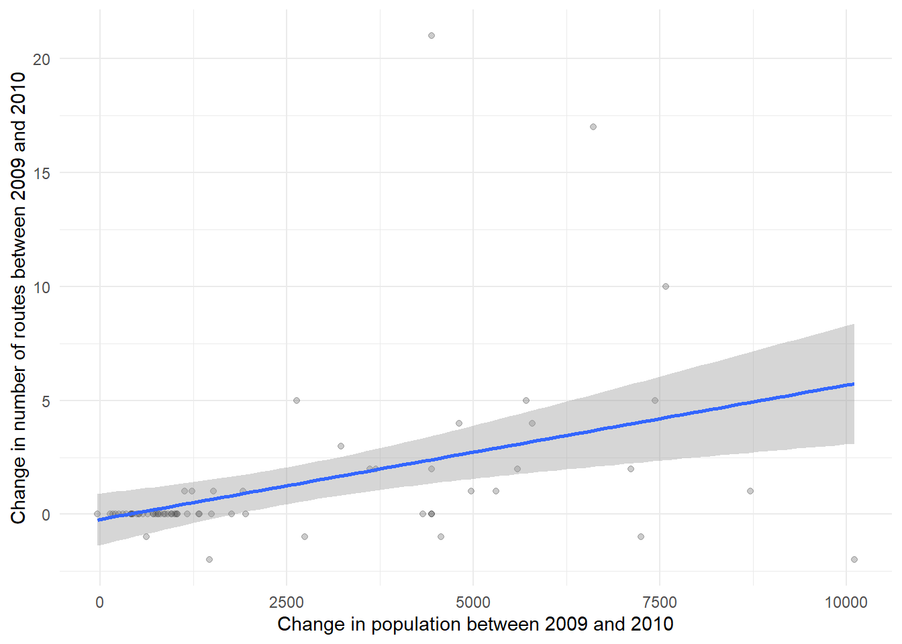

library(here)
library(tidyverse)
library(sf)Example Analysis
This is an example of some initial analysis comparing the route census to the population distribution in Kampala.
Required libraries
This example uses the following libraries
Load data
We have four data files.
grid_routes.geojson: A spatial data file with the number of routes crossing each grid cell for each year between 2000 and 2024 (variables labeled as F{year}). There is also a unique ID number for each grid cell and a variable indicating which neighborhood it’s in. This file includes the geometry of the grid cell boundaries
neighborhood-routes.geojson: A spatial data file with the number of routes crossing each neighborhood for each year between 2000 and 2024 (variables labeled as F{year}). This file includes the geometry of the neighborhood boundaries
grid-pop.csv: The estimated population of each grid cell for each year from 2000 to 2020. This data can be joined to the grid_routes layer by the grid cell ID numbers.
nhood-pop.csv: The estimated population of each neighborhood for each year from 2000 to 2020. This data can be joined to the neighborhood routes layer by the neighborhood name.
I am not sure why we’re missing population data for 863 grid cells or why three neighborhood names are duplicated.
grid_routes <- here("kampala-geography",
"grid_routes.geojson") |>
st_read()
nhood_routes <- here("kampala-geography",
"neighborhood-routes.geojson") |>
st_read()
grid_pop <- here("population-data",
"grid-pop.csv") |>
read_csv()
nhood_pop <- here("population-data",
"nhood-pop.csv") |>
read_csv() |>
rename(name = neighborhood)
grid <- inner_join(grid_routes, grid_pop)
nhood <- inner_join(nhood_routes, nhood_pop)Map population and route distribution
Here is a map showing the distribution of taxi routes across grid cells in 2010.
ggplot(grid) +
geom_sf(aes(fill = F2010),
color = NA) +
scale_fill_viridis_c(name = "Number of taxi routes",
transform = "log",
breaks = 2^seq(0, 8, by=1)) +
theme_void()
And here is a map showing the population variation across grid-cells in 2010:
ggplot(grid) +
geom_sf(aes(fill = pop_2010),
color = NA) +
scale_fill_viridis_c(name = "Population",
transform = "log",
breaks = breaks <- 10^seq(0, 4, by=1),
labels = prettyNum(breaks, big.mark = ",")) +
theme_void()
Here is a map showing the presence of routes across neighborhoods:
ggplot(nhood) +
geom_sf(aes(fill = F2010),
color = NA) +
scale_fill_viridis_c(name = "Number of taxi routes",
transform = "log",
breaks = 2^seq(0, 8, by=1)) +
theme_void()
And here is a map showing the variation on population by neighborhood in 2010.
ggplot(nhood) +
geom_sf(aes(fill = pop_2010),
color = NA) +
scale_fill_viridis_c(name = "Population",
transform = "log",
breaks = breaks <- 10000*2^seq(0, 6, by=1),
labels = formatC(breaks,
format = "d",
big.mark = ",")) +
theme_void()
Map changes in population and service
Here are the changes in route presence between 2009 and 2010, at the grid cell level.
grid_change <- grid |>
mutate(route_change = F2010 - F2009)
ggplot(grid_change) +
geom_sf(data = nhood,
fill = "white", color = "gray") +
geom_sf(aes(fill = route_change),
color = NA) +
scale_fill_gradient2(name = "Change in\nnumber of\nroutes serving\nlocation") +
theme_void()
Here are the changes in population between 2009 and 2010, at the grid cell level.
grid_change <- grid_change |>
mutate(pop_change = pop_2010 - pop_2009)
ggplot(grid_change) +
geom_sf(data = nhood,
fill = "white", color = "gray") +
geom_sf(aes(fill = pop_change),
color = NA,
alpha = 0.7) +
scale_fill_gradient2(name = "Population\nchange") +
theme_void()
Here are the changes in service at the neighborhood level between 2009 and 2010.
nhood_change <- nhood |>
mutate(route_change = F2010 - F2009)
ggplot(nhood_change) +
geom_sf(aes(fill = route_change),
color = "gray") +
scale_fill_gradient2(name = "Change in\nnumber of\nroutes serving\narea") +
theme_void()
And here are the corresponding changes in population.
nhood_change <- nhood_change |>
mutate(pop_change = pop_2010 - pop_2009)
ggplot(nhood_change) +
geom_sf(aes(fill = pop_change),
color = "gray") +
scale_fill_gradient2(name = "Change in\npopulation") +
theme_void()
Comparing service changes and population changes
Here is a scatter plot comparing service changes to population changes between 2009 and 2010 at the grid-cell level.
ggplot(grid_change,
aes(x = pop_change,
y = route_change)) +
geom_point(alpha = 0.2) +
stat_smooth(method = "lm") +
scale_x_continuous(name = "Change in population between 2009 and 2010") +
scale_y_continuous(name = "Change in number of routes between 2009 and 2010") +
theme_minimal()
Here is a similar plot at the neighborhood level.
ggplot(nhood_change,
aes(x = pop_change,
y = route_change)) +
geom_point(alpha = 0.2) +
stat_smooth(method = "lm") +
scale_x_continuous(name = "Change in population between 2009 and 2010") +
scale_y_continuous(name = "Change in number of routes between 2009 and 2010") +
theme_minimal()